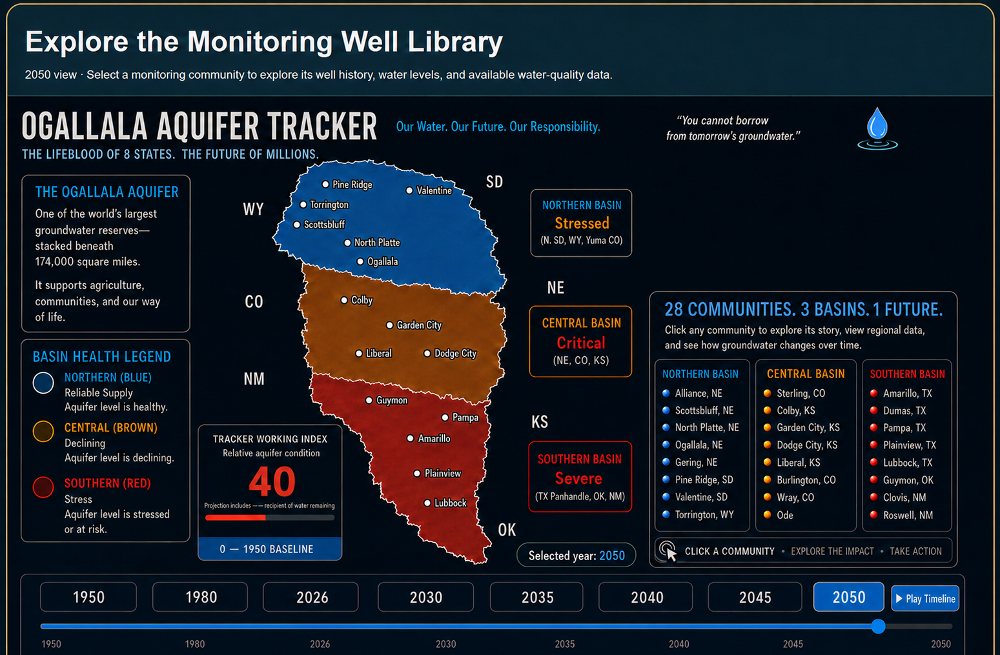

Monitoring Well Library: 28 monitoring communities across three basins, with historical water-level and available water-quality profiles to be added below.

28 monitoring locations · click a dot
Monitoring Well Profile Library
This section will hold one sourced profile for each of the 28 monitoring communities, including 10-, 20-, and 30-year groundwater-level history and the closest available water-quality records.
Alliance Recorder Well · Northern Unit
Northern Unit · Profile 1 of 28
Alliance Recorder Well
Box Butte County, Nebraska · High Plains Aquifer · UNL Conservation and Survey Division
Alliance water-table decline
Well depth: 259 feet · Measured quantity: depth to water below land surface. A larger value means the water table is farther underground.
Forty-year result: the selected spring measurement increased from 156.05 feet below land surface in 1985 to 213.44 feet in 2025—a documented 57.39-foot increase in depth to water. Larger depth means the water table is farther underground.
Monitoring well 26N 49W 6CC: 259-foot physical depth · High Plains aquifer · annual spring point selected from approved static measurements nearest March 20 · missing years remain gaps rather than being estimated.
City of Alliance municipal water quality · 2025
Nearby community drinking-water results. These values are not samples from the Alliance Recorder Well.
Nitrate–nitrite5.23 ppmEPA MCL: 10 ppm · 52.3% of limitBelow federal MCL
Arsenic5.47 ppbEPA MCL: 10 ppb · 54.7% of limitBelow federal MCL
Selenium4.27 ppbEPA MCL: 50 ppb · 8.5% of limitBelow federal MCL
Federal comparison: an EPA Maximum Contaminant Level (MCL) is the enforceable highest concentration allowed in public drinking water. These comparisons use the same units reported by the City.